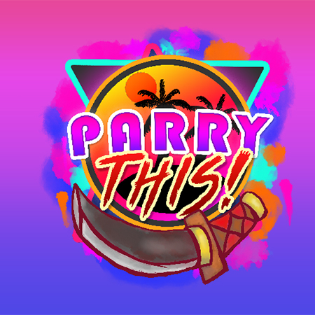
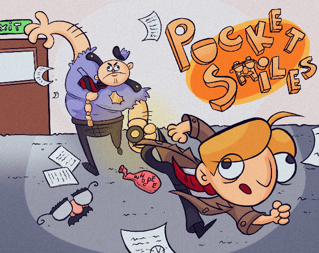
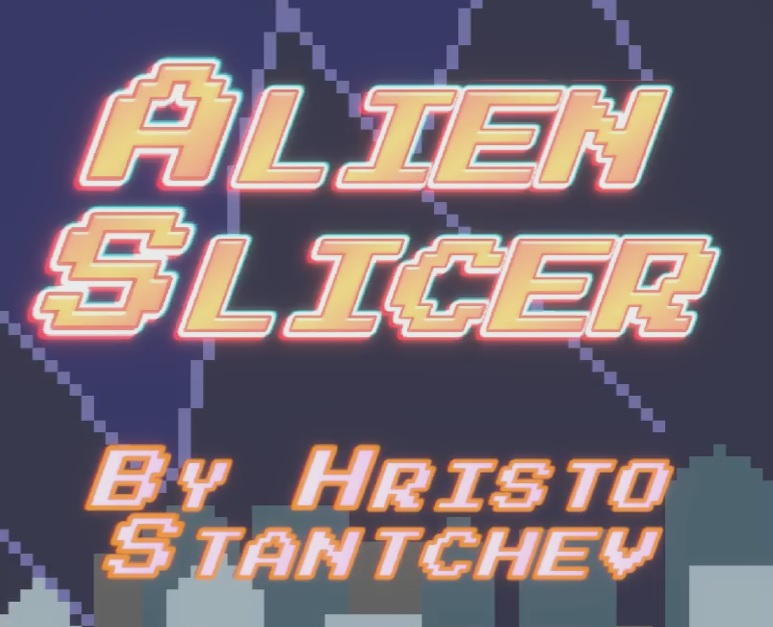

Main Projects

Parry This!
An intense, fast-paced action game where you can parry everything thrown at you!
- AI based on a Priority-based HFSM with NavMesh pathfinding and 9 unique enemy types
- Custom Player Controller featuring input buffering and 1-button attack sequencing for arcade precision
- Dynamic Enemy Spawning with Weighted Ratios and difficulty modifiers for balanced waves
- 200+ original assets: 2D, 3D art, Music, Sound, Shaders, and VFX crafted from scratch
Building this over 2.5 months taught me a great deal about game AI, optimizing systems, and managing complex game components cohesively.
Read More

Pocket Smiles
Plovdiv Game Jam 2024 2nd Place Winner - A 2D top-down stealth game with light puzzle elements.
- Designed and implemented enemy AI pathfinding and level layout for strategic stealth
- Built an Inventory System with item interactions and environmental puzzles
- Developed the UI and interaction systems for intuitive player experience
With only 48 hours, the experience underscored the importance of planning, strict scope management, and focusing on fun for the best player feedback.
Read More

Alien Slicer
A casual yet challenging 2D arcade slicer game with a sci-fi twist!
- Dynamic Edge Spawning Algorithm with physics bounds responsive to screen size
- Features endless slicing action with increasing difficulty to engage players
- Original assets: custom-designed aliens and sound effects to enhance player immersion
This project helped refine my approach to scope control, gesture handling, and optimizing responsiveness across different mobile devices.
Read More